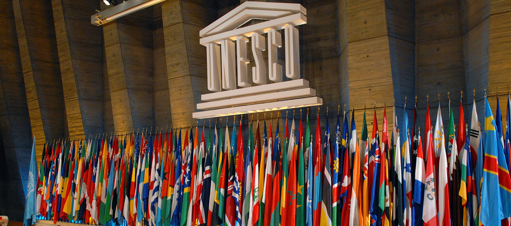

Wonders are extraordinary things that captivate our imagination and leave us in awe. They come in various forms, from natural landscapes to architectural marvels, and each one has its own unique story to tell. When we think of wonders, natural wonders often come to mind. Picture the majestic beauty of the Grand Canyon, with its vast expanse of colorful rock layers carved by the mighty Colorado River. It's a sight that leaves you breathless and reminds you of the immense power of nature. Then there are the man-made wonders that showcase human creativity and ingenuity. Take the Great Wall of China, an architectural masterpiece that stretches over 13,000 miles. It's a testament to the determination and skill of the ancient Chinese civilization. Historical wonders transport us to different eras and give us a glimpse into the past. The Pyramids of Giza, built as tombs for pharaohs, stand as a testament to the advanced engineering skills of the ancient Egyptians. Walking among these ancient structures, you can't help but feel a sense of wonder and admiration for the civilizations that came before us. But wonders aren't just limited to natural landscapes or ancient structures. There are also cultural wonders that reflect the richness and diversity of human traditions. The Taj Mahal in India, with its stunning white marble and intricate details, is a symbol of love and devotion. The intricate carvings and vibrant colors of the Alhambra in Spain transport you to a world of Moorish splendor. Wonders can also be found in the smallest of things. Consider the delicate beauty of a flower, like the intricate patterns of a sunflower or the vibrant colors of a tulip. Flowers have a way of brightening our day and reminding us of the wonders of nature. As you can see, wonders come in all shapes and sizes, and they have the power to inspire, educate, and evoke a sense of wonder within us. They remind us of the beauty and diversity of our world, and they encourage us to explore and appreciate the wonders that surround us. So, whether it's the towering peaks of the Himalayas, the ancient ruins of Machu Picchu, or the delicate petals of a rose, wonders are all around us, waiting to be discovered and celebrated. Let's continue to marvel at the wonders of our world and share their stories with others. Happy exploring
UNESCO
UNESCO World Heritage Site is a place, landmark, or area that has been recognized by the United Nations Educational, Scientific and Cultural Organization (UNESCO) as having outstanding universal value to humanity. These sites are considered to be of significant cultural, historical, scientific, or natural importance, and their preservation is deemed crucial for future generations. UNESCO designates World Heritage Sites based on stringent criteria, which include representing a masterpiece of human creative genius, exhibiting an important interchange of human values, bearing exceptional testimony to a cultural tradition, or containing outstanding natural beauty or ecological significance. World Heritage Sites can include a wide range of places, such as ancient monuments, historic buildings, archaeological sites, cultural landscapes, or natural features like forests, mountains, or waterfalls. As of 2021, there are over 1,100 UNESCO World Heritage Sites located in more than 160 countries around the world, each contributing to the collective heritage of humanity.

IMPORTANCE OF WONDERS
The importance of wonders is that they inspire us, spark our curiosity, and remind us of the beauty and diversity of our world. Wonders have the power to ignite our imagination, encourage exploration, and foster a sense of awe and appreciation. They remind us that there is so much to discover and learn, and they can even motivate us to protect and preserve the natural and cultural wonders around us. Wonders also have the ability to bring people together, as they often become symbols of pride and identity for communities and countries. So, whether it's the grandeur of a natural landscape or the intricate craftsmanship of a man-made structure, wonders have a profound impact on our lives and help us connect with the world in meaningful ways.
WHY WE NEED TO PROTECT WONDERS
We need to protect the wonders because they're like the superheroes of our planet! They play a crucial role in maintaining the balance of our ecosystems and preserving our cultural heritage. Let me break it down for you:
1. Biodiversity: Wonders are often home to a rich variety of plants, animals, and microorganisms. By protecting them, we ensure the survival of these species and maintain the delicate web of life on Earth.
2. Environmental balance: Many wonders, like coral reefs and rainforests, provide essential ecosystem services, such as regulating climate, purifying air and water, and preventing soil erosion. Protecting them helps maintain these vital functions.
3. Cultural heritage: Wonders, both natural and man-made, hold immense cultural and historical significance. They tell the stories of our ancestors, their achievements, and their way of life. By safeguarding these wonders, we preserve our shared human history.
4. Education and inspiration: Wonders inspire us to explore, learn, and appreciate the world around us. They spark curiosity and encourage scientific research. By protecting them, we ensure that future generations can continue to be inspired and educated by these incredible places.
5. Economic value: Wonders often attract tourists from all over the world, boosting local economies and providing employment opportunities. By protecting them, we support sustainable tourism and ensure long-term economic benefits.
So, my friend, protecting the wonders is not just about preserving beautiful landscapes or historic sites. It's about safeguarding our planet's health, cultural heritage, and the well-being of future generations. Let's all do our part in being responsible stewards of these incredible wonders!